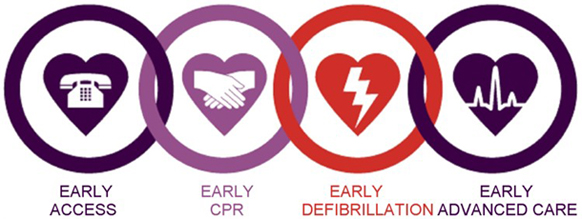

Amanda Mitchell
Full Stack Web Developer and Graphic Designer



About
I am a mother to a very comical and smart 3 year old! She is my Motivation to be the best I can be! With ten years experience in creating and maintaining e-commerce sites, branding and social media for Middle Tennessee companies using established frameworks, I decided to advance my knowledge and formally pursue a professional career as a software developer which led me to join Nashville Software School. This has been amazing yet challenging and I am ever so Thankful for this change in my life and career!